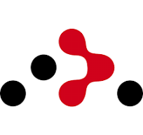
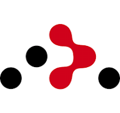

Skills
-
HTML
- Semantic Markup
- HTML5 Canvas
- 웹 접근성에 대한 기본적인 이해
-

CSS
- Flex, Grid를 활용한 반응형 웹
- media query 를 활용한 반응형 웹
-

Javascript
- ES5, ES6
- 클로저
- 비동기 처리
-
 

SPA
- react, react-router, react-query
- 재사용 가능한 컴포넌트 구현
- 커스텀 훅을 통한 비즈니스 로직 재사용
-
SSG, SSR
- Next.js 13
-

Cloud service
- AWS
프로젝트


개인 블로그
랜딩 페이지, 포트폴리오 페이지등을 만들어보면서
타입 명시와 재사용 가능한 컴포넌트의 필요성을 느꼈고
Typescript, React 를 사용해서 프로젝트를 진행했습니다.
WYSIWYG 에디터와 CMS 를 대체하여 MDX를 사용했고,
MDX page 라우팅 편의와 SSG를 위해 Next.js 를 활용했습니다.
Vercel 을 통해 배포하고 운영하고 있습니다.